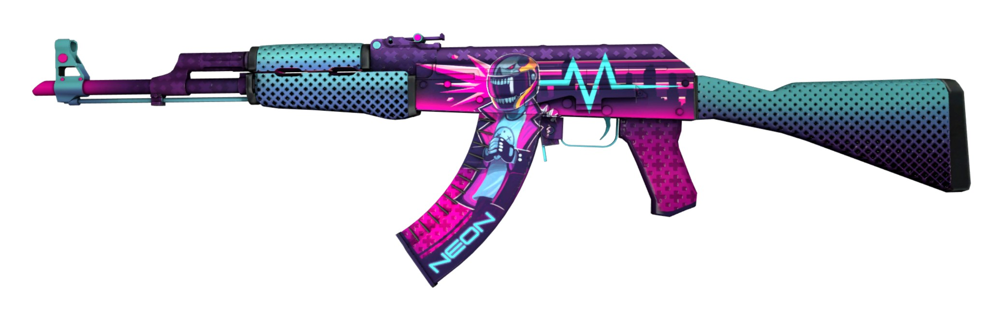

Перейти на другую страницу
Все ваши предметы из CS:GO не просто останутся при вас в Counter-Strike 2, но и станут красивее благодаря тому, как Source 2 работает с освещением и материалами. Игра не только поддерживает прежние раскраски, но и задействует для некоторых из них новые модели высокого качества Навигация по страницеCS 2
| Все права защищены.Материала взяты с Википедие |
| Cs2, 2023 |